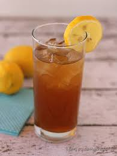

Arnold Palmer

This delicious beverage is really refreshing and easy to make in big batches so you can have plenty for later!
- Get one of those tubes of lemonade concentrate like this one here. Along with that, get a jar of liptons unsweetened iced tea mix.
- For this recipe you'll need an empty gallon jug so save a milk jug or something. Wait for the lemonade concentrate to reduce down to liquid form and then fill your jug halfway up with water.
- Pour your lemonade concentrate into the jug with the water.
- Add a little bit of water to the lemonade container and then add in 5 teaspoons of the liptons iced tea mix and stir to dissolve.
- Pour that tea mix into the jug and then top the jug off with water.
- Pop a lit of the jug and then shake well and set in your fride ready to be enjoyed as a delicious drink on a hot day.